Activity: Manipulating flow lines in an exploded assembly
Overview
In this activity you open an assembly that has an exploded view that was previously created. The event flow lines will be modified, then converted to annotation flow lines with the drop command. During this activity, assembly components will be repositioned along with the flow lines associated with each component.
Objectives
In this activity, you will accomplish the following:
-
Modify event flow lines.
-
Create and modify annotation flow lines.
-
Delete annotation flow lines.
-
Split annotation flow lines and then modify them.
-
Place an exploded view on a drawing sheet.
Open the assembly computer_speaker.asm with all the parts active.
On the Tools tab in the Environs group, choose the ERA command.

On the Home tab in the Configurations group, choose the Display Configurations command  .
.
Select the configuration named explode. Click Apply and then click Close.
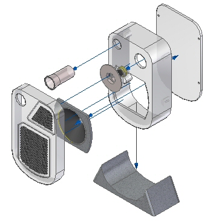
The flow lines in this Display Configuration are event flow lines.
Choose the Drag Component command  .
.
Select the Assembly Component woofer_tube1.par as shown and Accept.
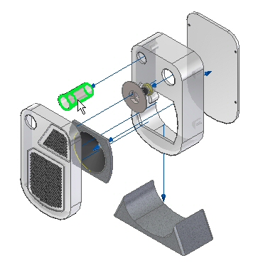
Select the Z axis and enter the distance value of 50 mm.
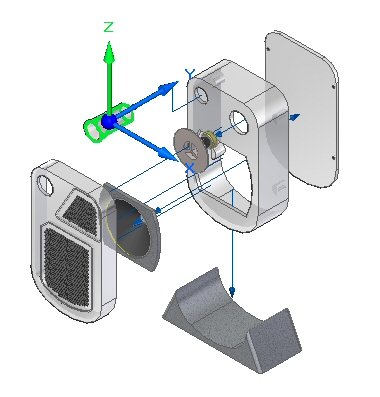
Click the Select Tool to exit the Drag Component command. The flow line has been modified as shown.
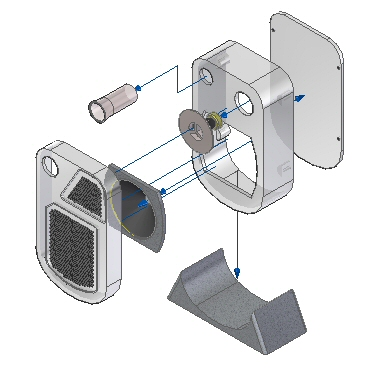
Choose the Modify command .
Select the flow line shown.
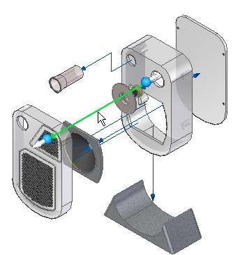
Click the handle shown.
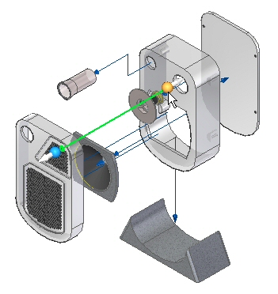
Select the end point of the line segment shown.
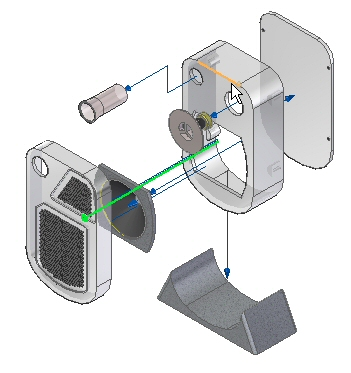
The flow line is moved as shown.
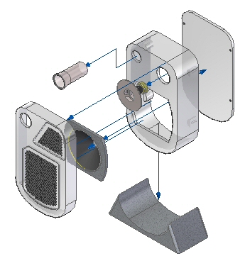
Save the Display Configuration.

Observe the Explode PathFinder. Event flow lines are not displayed in Explode PathFinder.
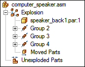
Choose the Drop command.
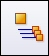
Observe the Explode PathFinder. The event flows lines have been converted to annotation flow lines.
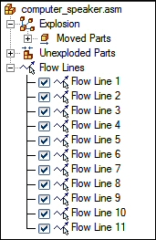
The event flow lines have not been lost. The event flow lines are stored and saved in the Display Configuration that was saved prior to dropping the flow lines. A Display Configuration with the annotation flow lines should be saved with a different Display Configuration name.
Choose the Display Configurations command .
Click New. Enter annotation then click OK. Click Close.
The Display Configuration containing the annotation flow lines has been saved.
In the Explode PathFinder, select flow line 3.
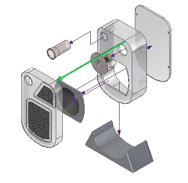
Delete flow line 3.
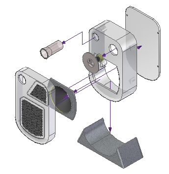
The deleted flow line was connected to the part grate2_1.par.
Choose the Drag Component command .
Select grate2_1.par and Accept.
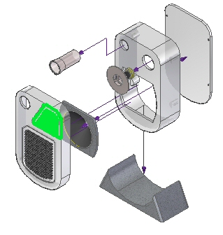
Move the grate2_1.par –300 mm in the Y direction, –100 mm in the X direction, and 200 mm in the Z direction.
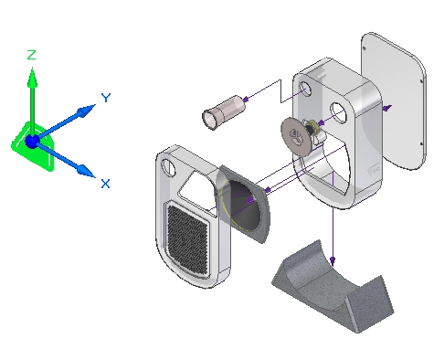
A new annotation flow line will be created. Choose the Draw command .
For the start point of the flow line, click the circle shown.
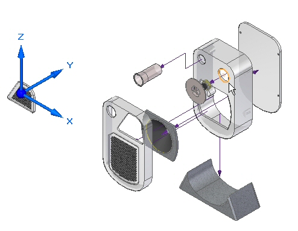
For the end of the flow line, click the circle shown.
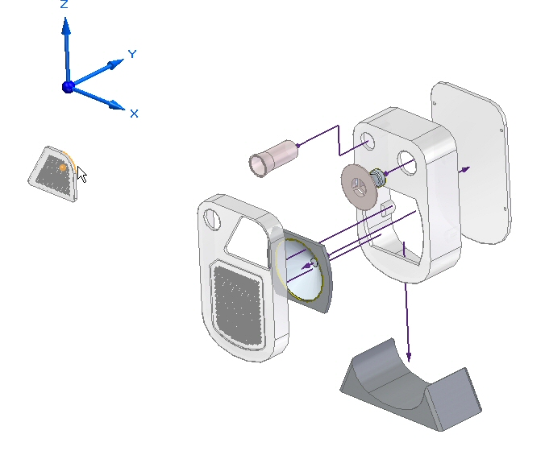
Click the Draw Previous button and Draw Next button to get the result shown. Click Finish and then click Cancel.
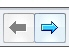
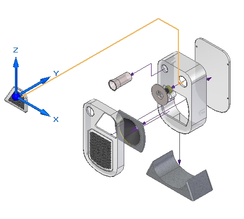
An annotation flow line is created.
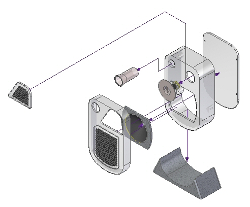
Choose the Modify command .
Select the segment handle as shown.
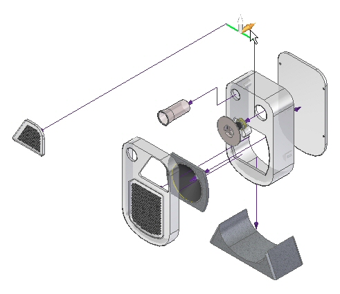
Drag the segment to the approximate position shown.
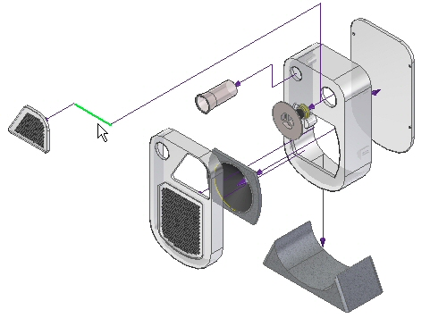
Select Split Flow Line
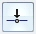
on the Modify command bar.Select the flow line shown in the approximate position shown.
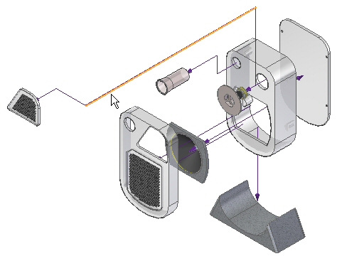
Choose the Modify command .
Select the segment handle as shown.
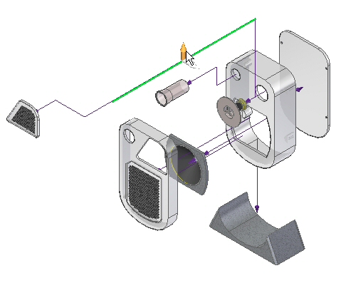
Drag the segment to the approximate position shown.
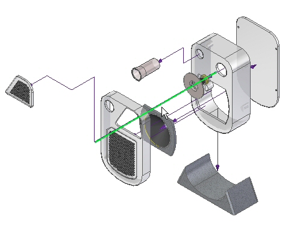
Save the Display Configuration.
Close ERA and Save the assembly.

Click the File tab. Then click New→Create Drawing of Active Model. Click OK when prompted for the default template and Run Drawing View Creation Wizard.
Select the Drawing View Wizard Options on the command bar. Select the Display Configuration named annotation in the Drawing View Wizard.
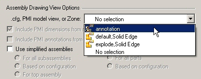
Place the exploded view on the drawing sheet.
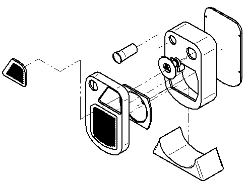
Save and close all files. This completes this activity.
In this activity, you used the Explode-Render-Animate application to accomplish the following:
-
Modify event flow lines.
-
Create and modify annotation flow lines.
-
Delete annotation flow lines.
-
Split annotation flow lines and then modify them.
-
Place an exploded view on a drawing sheet.
Click the Close button in the activity window.
Answer the following questions:
-
What is the difference between an event flow line and an annotation flow line?
-
Can annotation flow lines be stored in a display configuration?
-
Can annotation flow be split and segments modified?
-
What is the difference between an event flow line and an annotation flow line?
Event flow lines control animation explode events, and are created with the explode commands. Dropping the flow lines changes them into annotation flow lines which can be used in the draft environment.
-
Can annotation flow lines be stored in a display configuration?
Annotation flow lines must be stored in a display configuration to late be placed on a drawing sheet.
-
Can annotation flow be split and segments modified?
Annotation flow lines can be split into segments and each segment dragged to a new position.